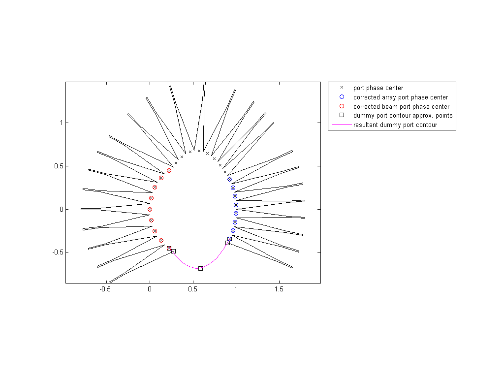
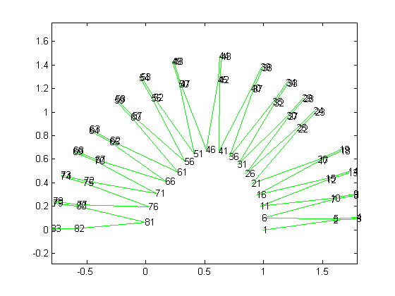
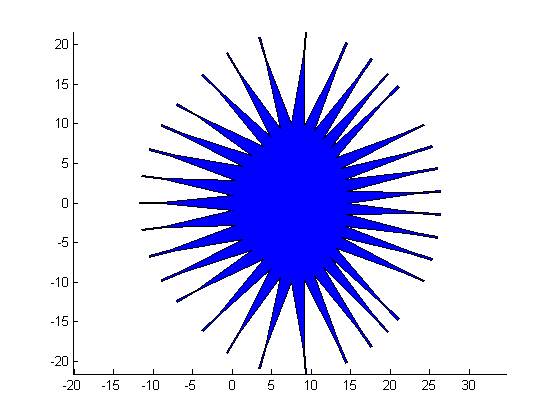

Rotman Lens design and visualization
This script generates a planar polygon with N vertices defined by coordinate vectors X and Y. Polygon represents the contour of the planar Rotman Lens (RL) based on the user defined input parameters. RL port phase centers are obtained by the evaluation of the formulas published by Peter S. Simons, 2004.
All dimensions are in meters and angles in radians.
Contents
- ACKNOWLEDGEMENT
- Init
- Basic input parameters
- Antenna elememt spacing
- Transmission lines and transitions definition
- Dummy port contour parameters
- Array and Beam ports phase center correction
- Evaluations
- Beam port geometry generation
- Array port geometry generation
- Dummy port geometry generation
- Visualization of RL contour and specific points in normalised scale [1/f1]
- Visualization of RL vertices numbering in normalized scale [1/f1]
- Visualization of RL in real scale [mm] for target Er
- Outputs
ACKNOWLEDGEMENT
If you've found this code useful for your work, indicate the authors in your publications please:
Dr.Michal Pokorny [pokorny.michal@seznam.cz] Prof. Zbynek Raida [raida@feec.vutbr.cz]
SIX Research Center Brno University of Technology Technická 12 CZ-616 00 Brno Czech Republic
Init
close all; clear all; clc
Basic input parameters
%input set 1 v0=299792458; %[m/s] speed of light f=60e9; %[Hz] design frequency lambda0=v0/f; %[m] wavelength in vacuum Er=2.9; %[-] relative permittivity of dielectric substrate %input set 2 Nb=9; %number of the beam ports Na=8; %number of the array ports Nd=8; %[1 2 4 8] only possible number of the dummy ports, theta = 30; %[deg] Array steering angles alpha = 30; %[deg] Focal angle beta = 0.90; %Focal ration f2/f1 gamma = 1.00; %Expansion factor sin(phi)/sin(alpha) f1=5*lambda0; %On-axis focal length
Antenna elememt spacing
% sd=1/(1+sin(pi*50/180)); %[lambda0] maximal array antenna elements %spacing preventing to form the gratin lobes sd=0.5; %[lambda0]array antenna elements spacing d=sd*lambda0; %[m]array antenna elements spacing
Transmission lines and transitions definition
ww=0.00021; %[m] transmission line width. Put here the target width of your %microstrip line or SIW line connected to the ports Ww=ww*sqrt(Er); %rescaling for vacuum Er=1; Lw=lambda0; %[m]length of the transmission lines (TL) Lbp=3*lambda0; %[m]length of taper transition from RL region to TL at BEAM ports Lap=3*lambda0; %[m]length of taper transition from RL region to TL at ARRAY ports Ldp=3*lambda0; %[m]length of taper transition from RL region to TL at DUMMY ports
Dummy port contour parameters
lw=1.4; %lens width relative to the total array ports or beam ports area width pd=2; %polynom degree for the dummy port contour approximation td=0.8; %relative deviation of the dummy port longitudinal axis from lens contour normal
Array and Beam ports phase center correction
PhCC=3; %select your option % 1 ~ Correction based on E.I. Muehldorf 1970, IEEE Tran. on Antennas and Prop. % 2 ~ Correction based on approximation of CST and HFSS calculations % 3 ~ No correction % 4 ~ Manually specified correction PhCCx: PhCCb = 0.001; %[m] beam ports phase center correction PhCCa = 0.001; %[m] array ports phase center correction
Evaluations
%auxiliary parameters theta = linspace(-2*pi*theta/360,2*pi*theta/360,Nb); alpha = 2*pi*alpha/360; y3=(1:1:Na)*d-(Na+1)*d/2; %location of the array elements along array axis W0=0.005/f1; %ofset length of TEM cables zeta=y3*gamma/f1; rho0 = 1-(1-beta^2)/(2*(1-beta*cos(alpha))); alphaN = asin(sin(theta)/gamma); phi = asin(((1-rho0)/rho0)*sin(alphaN)); %calculation of the normalized length w of TEM cable, w/f1 a = 1-(1-beta)^2/(1-beta*cos(alpha))^2-(zeta.^2/beta^2); b = -2+2*zeta.^2./beta + 2*(1-beta)/(1-beta*cos(alpha))-zeta.^2.*sin(alpha)^2*(1-beta)/(1-beta*cos(alpha)^2); c = -zeta.^2 + zeta.^2.*sin(alpha)^2/(1-beta*cos(alpha)) - zeta.^4.*sin(alpha)^4/(4*(1-beta*cos(alpha))^2); W=-(b+sqrt(b.^2-4.*a.*c))./(2*a); % array port phase center NORMALIZED coordinates Xa=1-((0.5*zeta.^2*sin(alpha)^2+(1-beta).*W)./(1-beta*cos(alpha))); Ya=zeta.*(1-W./beta); % beam port phase center NORMALIZED coordinates Xb=rho0*(1-cos(alphaN+phi)); Yb=rho0*sin(alphaN+phi);
Beam port geometry generation
alphaC=atan(Yb./(rho0-Xb)); %angles from the center of the beam port arc deltaB=atan(Yb./(1-Xb)); %angles from the center of array curve Wp=sqrt((Xb(1)-Xb(2))^2+(Yb(1)-Yb(2))^2)/cos((alphaC(1)-alphaC(2))/2); %Aperture width, (will be corrected due to non uniform aperture widths) Wp=Wp*f1; %Unnormalization. Wp was calculated from normalized coordinates %Evaluation of the phase shift deviation Lph from aperture center Rh=sqrt(((Wp+Ww)/2)^2+Lbp^2); S=Wp^2/(8*lambda0*Rh); switch PhCC case 1 if S>0.06 %approximations are not valid below S=0.06 Lph=(2.6746*S.^2 + 0.2026*S - 0.0085)*Rh; %approximation of the Lph from E.I. Muehldorf 1970, IEEE Tran. on Antennas and Prop. else Lph=0; end; case 2 if S>0.06 %approximations are not valid below S=0.06 Lph=( -454.9955*S.^6 + 837.7860*S.^5 - 556.1810*S.^4 + 147.3046*S.^3 - 9.4030*S.^2 + 0.3223*S)*Rh;%approximation of the Lph based on CST and HFSS calculations else Lph=0; end; case 3 Lph=0; case 4 Lph=PhCCb; otherwise Lph=0; end %new coordinates of the beam ports, shifted phase center by Lph Xb0=Xb+cos(deltaB)*Lph/f1; Yb0=Yb-sin(deltaB)*Lph/f1; XbN=Xb0-cos(deltaB)*Lbp/f1; YbN=Yb0+sin(deltaB)*Lbp/f1; XbNN=Xb0-cos(deltaB)*(Lbp+Lw)/f1; YbNN=Yb0+sin(deltaB)*(Lbp+Lw)/f1; Xb1=Xb0+sin(alphaC)*Wp/2/f1; Yb1=Yb0+cos(alphaC)*Wp/2/f1; Xb2=Xb0-sin(alphaC)*Wp/2/f1; Yb2=Yb0-cos(alphaC)*Wp/2/f1; Xb3=XbN+sin(deltaB)*Ww/2/f1; Yb3=YbN+cos(deltaB)*Ww/2/f1; Xb4=XbN-sin(deltaB)*Ww/2/f1; Yb4=YbN-cos(deltaB)*Ww/2/f1; Xb5=XbNN+sin(deltaB)*Ww/2/f1; Yb5=YbNN+cos(deltaB)*Ww/2/f1; Xb6=XbNN-sin(deltaB)*Ww/2/f1; Yb6=YbNN-cos(deltaB)*Ww/2/f1; for i=1:1:length(Xb)-1 %correction for the aperture width centerX(i)=(Xb2(i+1)+Xb1(i))/2; centerY(i)=(Yb2(i+1)+Yb1(i))/2; Xb2(i+1)=centerX(i); Xb1(i)=centerX(i); Yb2(i+1)=centerY(i); Yb1(i)=centerY(i); end;
Array port geometry generation
%repeat the array port calculation of intervaley coordinates Na0=Na-1; y30=(1:1:Na0)*lambda0/2-(Na0+1)*lambda0/4; zeta0=y30*gamma/f1; a0 = 1-(1-beta)^2/(1-beta*cos(alpha))^2-(zeta0.^2/beta^2); b0 = -2+2*zeta0.^2./beta + 2*(1-beta)/(1-beta*cos(alpha))-zeta0.^2.*sin(alpha)^2*(1-beta)/(1-beta*cos(alpha)^2); c0 = -zeta0.^2 + zeta0.^2.*sin(alpha)^2/(1-beta*cos(alpha)) - zeta0.^4.*sin(alpha)^4/(4*(1-beta*cos(alpha))^2); W00=-(b0+sqrt(b0.^2-4.*a0.*c0))./(2*a0); Xaa=1-((0.5*zeta0.^2*sin(alpha)^2+(1-beta).*W00)./(1-beta*cos(alpha))); Yaa=zeta0.*(1-W00./beta); %those coordinates gives the tangent angle to the port alphaC0=atan(diff(Yaa)./diff(Xaa)); alphaC1=[0 alphaC0 0]; Wpa=sqrt((Xa(1)-Xa(2))^2+(Ya(1)-Ya(2))^2); Wpa=Wpa*f1; Law=Lw; Wwa=Ww; Xa1=Xa-cos(alphaC1)*Wpa/2/f1; Ya1=Ya-sin(alphaC1)*Wpa/2/f1; alphaC2=atan((Ya1(2)-Ya(1))/(Xa1(2)-Xa(1))); alphaC1=[alphaC2 alphaC0 -alphaC2]; %Evaluation of the phase shift deviation Lph from aperture center Rha=sqrt(((Wpa+Wwa)/2)^2+Lap^2); Sa=Wpa^2/(8*lambda0*Rha); switch PhCC case 1 if Sa>0.06 %approximations are not valid below S=0.06 Lpha=(2.6746*S.^2 + 0.2026*S - 0.0085)*Rh; %approximation of the Lph from E.I. Muehldorf 1970, IEEE Tran. on Antennas and Prop. else Lpha=0; end; case 2 if Sa>0.06 %approximations are not valid below S=0.06 Lpha=( -454.9955*S.^6 + 837.7860*S.^5 - 556.1810*S.^4 + 147.3046*S.^3 - 9.4030*S.^2 + 0.3223*S)*Rh;%approximation of the Lph based on CST and HFSS calculations else Lpha=0; end; case 3 Lpha=0; case 4 Lpha=PhCCa; otherwise Lpha=0; end %new coordinates of the beam ports, shifted phase center by Lph for i=1:1:length(Xa) if alphaC1(i)>0 Xa0(i)=Xa(i)-sin(alphaC1(i))*Lpha/f1; Ya0(i)=Ya(i)+cos(alphaC1(i))*Lpha/f1; else Xa0(i)=Xa(i)+sin(alphaC1(i))*Lpha/f1; Ya0(i)=Ya(i)-cos(alphaC1(i))*Lpha/f1; end end Xa1=Xa0-cos(alphaC1)*Wpa/2/f1; Ya1=Ya0-sin(alphaC1)*Wpa/2/f1; Xa2=Xa0+cos(alphaC1)*Wpa/2/f1; Ya2=Ya0+sin(alphaC1)*Wpa/2/f1; deltaB0=alphaC1; % angle to axis of the array port; tangent to the lens contour for i=1:1:length(Xa) if deltaB0(i)>0 XaN(i)=Xa0(i)+sin(deltaB0(i))*Lap/f1; YaN(i)=Ya0(i)-cos(deltaB0(i))*Lap/f1; XaNN(i)=Xa0(i)+sin(deltaB0(i))*(Lap+Law)/f1; YaNN(i)=Ya0(i)-cos(deltaB0(i))*(Lap+Law)/f1; else XaN(i)=Xa0(i)-sin(deltaB0(i))*Lap/f1; YaN(i)=Ya0(i)+cos(deltaB0(i))*Lap/f1; XaNN(i)=Xa0(i)-sin(deltaB0(i))*(Lap+Law)/f1; YaNN(i)=Ya0(i)+cos(deltaB0(i))*(Lap+Law)/f1; end end deltaB0=pi/2-alphaC1; Xa3=XaN-sin(deltaB0)*Wwa/2/f1; Ya3=YaN-cos(deltaB0)*Wwa/2/f1; Xa4=XaN+sin(deltaB0)*Wwa/2/f1; Ya4=YaN+cos(deltaB0)*Wwa/2/f1; Xa5=XaNN-sin(deltaB0)*Wwa/2/f1; Ya5=YaNN-cos(deltaB0)*Wwa/2/f1; Xa6=XaNN+sin(deltaB0)*Wwa/2/f1; Ya6=YaNN+cos(deltaB0)*Wwa/2/f1; for i=2:1:length(Xa)-1 %correction for the aperture width if alphaC1(i)>0 centerXa(i)=(Xa2(i-1)+Xa1(i))/2; centerYa(i)=(Ya2(i-1)+Ya1(i))/2; Xa2(i-1)=centerXa(i); Xa1(i)=centerXa(i); Ya2(i-1)=centerYa(i); Ya1(i)=centerYa(i); else centerXa(i)=(Xa2(i+1)+Xa1(i))/2; centerYa(i)=(Ya2(i+1)+Ya1(i))/2; Xa2(i+1)=centerXa(i); Xa1(i)=centerXa(i); Ya2(i+1)=centerYa(i); Ya1(i)=centerYa(i); end if(~mod(Na,2)) i=floor(Na/2); centerXa0=(Xa2(i+1)+Xa2(i))/2; centerYa0=(Ya2(i+1)+Ya2(i))/2; Xa2(i+1)=centerXa0; Xa2(i)=centerXa0; Ya2(i+1)=centerYa0; Ya2(i)=centerYa0; else i=floor(Na/2); centerXa0=(Xa2(i+1)+Xa2(i+2))/2; centerYa0=(Ya2(i+1)+Ya2(i+2))/2; Xa2(i+1)=centerXa0; Xa2(i+2)=centerXa0; Ya2(i+1)=centerYa0; Ya2(i+2)=centerYa0; end; end;
Dummy port geometry generation
Xp=[Xb0(1) Xb2(1) (Xb2(1)+Xa1(1))/2 Xa1(1) Xa0(1)]; Yp=[Yb0(1) Yb2(1) min(Yb2(1),Ya1(1))*lw Ya1(1) Ya0(1)]; %Approximation points p = polyfit(Xp,Yp,pd); Xd= linspace(Xb0(1),Xa0(1),10); Yd=polyval(p,Xd); XA=Xb2(1); YA=Yb2(1); XC=Xa1(1); YC=Ya1(1); switch Nd case 1 Xd0=[XA XC]; Yd0=-[YA YC]; case 2 [XB, YB ]=equicenter(XA, YA, XC, YC, p); Xd0=[XA XB XC]; Yd0=-[YA YB YC]; case 4 [XB, YB ]=equicenter(XA,YA,XC,YC,p); [XBN, YBN ]=equicenter(XA,YA,XB,YB,p); [XBNN, YBNN ]=equicenter(XB,YB,XC,YC,p); Xd0=[XA XBN XB XBNN XC]; Yd0=-[YA YBN YB YBNN YC]; case 8 [XB, YB ]=equicenter(XA,YA,XC,YC,p); [XBN, YBN ]=equicenter(XA,YA,XB,YB,p); [XBNN, YBNN ]=equicenter(XB,YB,XC,YC,p); [XBNM, YBNM ]=equicenter(XA,YA,XBN,YBN,p); [XBNMM, YBNMM ]=equicenter(XBN,YBN,XB,YB,p); [XBNNM, YBNNM ]=equicenter(XB,YB,XBNN,YBNN,p); [XBNNMM, YBNNMM ]=equicenter(XBNN,YBNN,XC,YC,p); Xd0=[XA, XBNM, XBN, XBNMM, XB, XBNNM, XBNN, XBNNMM, XC]; Yd0=-[YA, YBNM, YBN, YBNMM, YB, YBNNM, YBNN, YBNNMM, YC]; otherwise Xd0=[XA XC]; Yd0=-[YA YC]; end for i=1:1:length(Xd0)-1 Xd0c(i)=(Xd0(i)+Xd0(i+1))/2; Yd0c(i)=(Yd0(i)+Yd0(i+1))/2; end alphaD=-atan(diff(Yd0)./diff(Xd0)); Ldw=Lw; Wwd=Ww; alphaD=alphaD*td; XdN=Xd0c+sin(alphaD)*Ldp/f1; YdN=Yd0c+cos(alphaD)*Ldp/f1; XdNN=Xd0c+sin(alphaD)*(Ldp+Ldw)/f1; YdNN=Yd0c+cos(alphaD)*(Ldp+Ldw)/f1; for i=1:1:Nd Xd1(i)=Xd0(i); Yd1(i)=Yd0(i); Xd2(i)=Xd0(i+1); Yd2(i)=Yd0(i+1); end Xd3=XdN-cos(alphaD)*Wwd/2/f1; Yd3=YdN+sin(alphaD)*Wwd/2/f1; Xd4=XdN+cos(alphaD)*Wwd/2/f1; Yd4=YdN-sin(alphaD)*Wwd/2/f1; Xd5=XdNN-cos(alphaD)*Wwd/2/f1; Yd5=YdNN+sin(alphaD)*Wwd/2/f1; Xd6=XdNN+cos(alphaD)*Wwd/2/f1; Yd6=YdNN-sin(alphaD)*Wwd/2/f1; %remove the border points, they are duplicate to curve points Xd=Xd(1:length(Xd)); Yd=Yd(1:length(Yd));
Visualization of RL contour and specific points in normalised scale [1/f1]
figure('Position',[1 1 1024 768]) plot(Xd0c,Yd0c,'kx'); hold on; plot(Xa,Ya,'bo'); plot(Xb,Yb,'ro') plot(Xp, Yp,'ks') plot(Xd,Yd,'m-') plot(Xa1(1),Ya1(1),'ks') plot(Xa0,Ya0,'kx') plot(Xb0,Yb0,'kx') j=1; for i=length(Xd1):-1:1 plot([Xd2(i) Xd4(i) Xd6(i) Xd5(i) Xd3(i) Xd1(i)],[Yd2(i) Yd4(i) Yd6(i) Yd5(i) Yd3(i) Yd1(i)],'k-') Xn((j-1)*6+1:j*6)=[Xd2(i) Xd4(i) Xd6(i) Xd5(i) Xd3(i) Xd1(i)]; Yn((j-1)*6+1:j*6)=[Yd2(i) Yd4(i) Yd6(i) Yd5(i) Yd3(i) Yd1(i)]; j=j+1; end; for i=length(Xb):-1:1 plot([Xb2(i) Xb4(i) Xb6(i) Xb5(i) Xb3(i) Xb1(i)],[Yb2(i) Yb4(i) Yb6(i) Yb5(i) Yb3(i) Yb1(i)],'k-') Xn((j-1)*6+1:j*6)=[Xb1(i) Xb3(i) Xb5(i) Xb6(i) Xb4(i) Xb2(i)]; Yn((j-1)*6+1:j*6)=[Yb1(i) Yb3(i) Yb5(i) Yb6(i) Yb4(i) Yb2(i)]; j=j+1; end; for i=1:1:length(Xd1) plot([Xd1(i) Xd3(i) Xd5(i) Xd6(i) Xd4(i) Xd2(i)],[Yd1(i) Yd3(i) Yd5(i) Yd6(i) Yd4(i) Yd2(i)],'k-') Xn((j-1)*6+1:j*6)=[Xd1(i) Xd3(i) Xd5(i) Xd6(i) Xd4(i) Xd2(i)]; Yn((j-1)*6+1:j*6)=-[Yd1(i) Yd3(i) Yd5(i) Yd6(i) Yd4(i) Yd2(i)]; j=j+1; end; if(mod(Na,2)) for i=1:1:floor(length(Xa)/2)+1 plot([Xa2(i) Xa4(i) Xa6(i) Xa5(i) Xa3(i) Xa1(i)],[Ya2(i) Ya4(i) Ya6(i) Ya5(i) Ya3(i) Ya1(i)],'k-') Xn((j-1)*6+1:j*6)=[Xa1(i) Xa3(i) Xa5(i) Xa6(i) Xa4(i) Xa2(i)]; Yn((j-1)*6+1:j*6)=[Ya1(i) Ya3(i) Ya5(i) Ya6(i) Ya4(i) Ya2(i)]; j=j+1; end; for i=floor(length(Xa)/2)+2:1:length(Xa) plot([Xa2(i) Xa4(i) Xa6(i) Xa5(i) Xa3(i) Xa1(i)],[Ya2(i) Ya4(i) Ya6(i) Ya5(i) Ya3(i) Ya1(i)],'k-') Xn((j-1)*6+1:j*6)=[Xa2(i) Xa4(i) Xa6(i) Xa5(i) Xa3(i) Xa1(i)]; Yn((j-1)*6+1:j*6)=[Ya2(i) Ya4(i) Ya6(i) Ya5(i) Ya3(i) Ya1(i)]; j=j+1; end; else for i=1:1:floor(length(Xa)/2) plot([Xa2(i) Xa4(i) Xa6(i) Xa5(i) Xa3(i) Xa1(i)],[Ya2(i) Ya4(i) Ya6(i) Ya5(i) Ya3(i) Ya1(i)],'k-') Xn((j-1)*6+1:j*6)=[Xa1(i) Xa3(i) Xa5(i) Xa6(i) Xa4(i) Xa2(i)]; Yn((j-1)*6+1:j*6)=[Ya1(i) Ya3(i) Ya5(i) Ya6(i) Ya4(i) Ya2(i)]; j=j+1; end; for i=floor(length(Xa)/2)+1:1:length(Xa) plot([Xa2(i) Xa4(i) Xa6(i) Xa5(i) Xa3(i) Xa1(i)],[Ya2(i) Ya4(i) Ya6(i) Ya5(i) Ya3(i) Ya1(i)],'k-') Xn((j-1)*6+1:j*6)=[Xa2(i) Xa4(i) Xa6(i) Xa5(i) Xa3(i) Xa1(i)]; Yn((j-1)*6+1:j*6)=[Ya2(i) Ya4(i) Ya6(i) Ya5(i) Ya3(i) Ya1(i)]; j=j+1; end; end; axis equal %final coordinates j=1;%remove duplicate coordinates for i=1:1:length(Xn)-1 if ~((Xn(i)==Xn(i+1))&&(Yn(i)==Yn(i+1))) X(j)= Xn(i); Y(j)= Yn(i); j=j+1; end; end; %shift coordinates position X = circshift(X',5*floor(length(Xa)/2)+2*mod(Na,2)); Y = circshift(Y',5*floor(length(Ya)/2)+2*mod(Na,2)); axis equal legend('port phase center','corrected array port phase center',... 'corrected beam port phase center',... 'dummy port contour approx. points','resultant dummy port contour',... 'Location','NorthEastOutside');
Visualization of RL vertices numbering in normalized scale [1/f1]
figure(2) N=floor(length(X)/2)+1*~mod(Na,2)+ 1*~mod(Nb,2) -1*(~mod(Na,2)&&~mod(Nb,2)); % plot(X(1:N)*f1*1000,Y(1:N)*f1*1000,'g-'); plot(X(1:N),Y(1:N),'g-'); axis equal hold on for i=1:1:N % text(X(i)*f1*1000,Y(i)*f1*1000,num2str(i)); text(X(i),Y(i),num2str(i)); end;
Visualization of RL in real scale [mm] for target Er
figure(3) patch(X*f1*1000/sqrt(Er),Y*f1*1000/sqrt(Er),'b'); axis equal
Outputs
disp(['Number of polygon coordinates: ',num2str(length(X))]); out=[f,Er,N,Nb,Na,Nd,theta,alpha,beta,gamma,f1/lambda0]; save RL_parameters.tab out -ascii out=[X*f1*1000/sqrt(Er),Y*f1*1000/sqrt(Er)]; save RL_XY_coordinates_in_mm.tab out -ascii %Correction TEM line lengths for Er=1 out=W*f1; % unnormalisation to [m] save W.tab out -ascii %Free space signal lenghts from reference plane to the phase plane Y3=y3/f1; for i=1:1:length(Xa) Dd(:,i)= Y3(i)*sin(theta); end; out=Dd*f1; save D.tab out -ascii
Number of polygon coordinates: 165